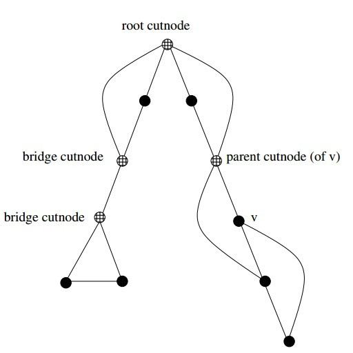
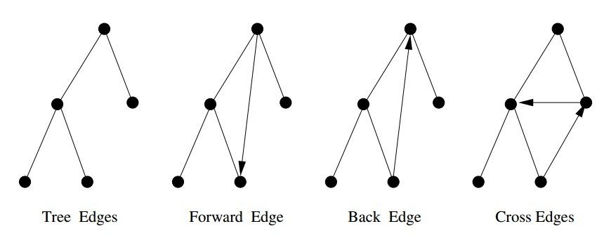
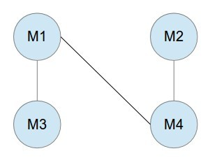
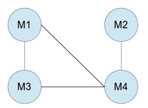

Algorithm Design Manual Chapter 5
Table of Contents
Book Notes
5.1 Flavors of Graphs
- Undirected vs. Directed
- Weighted vs. Unweighted
- Simple vs. Non-simple
- Sparse vs. Dense
- Cyclic vs. Acyclic
- Embedded vs. Topological
- Implicit vs. Explicit
- Labeled vs. Unlabeled
5.2 Data Structures for Graphs
- Adjacency Matrix: We can represent G using an n×n matrix M, where element M[i, j] = 1 if(i, j) is an edge of G, and 0 if it isn’t.
- Adjacency Lists: We can more efficiently represent sparse graphs by using linked lists to store the neighbors adjacent to each vertex.
Adjacency lists are the right data structure for most applications of graphs.
Adjacency Lists
#define MAXV 1000 // maximum number of vertices typedef struct { int y; // adjacency info int weight; // edge weight, if any struct edgenode *next; // next edge in list } edgenode; typedef struct { edgenode *edges[MAXV + 1]; // adjacency info int degree[MAXV + 1]; // outdegree of each vertex int nvertices; // number of vertices in graph int nedges; // number of edges in graph bool directed; // is the graph directed } graph; void initialize_graph(graph *g, bool directed) { int i; g->nvertices = 0; g->nedges = 0; g->directed = directed; for (i = 1; i <= NMAX; ++i) { g->degree[i] = 0; g->edges[i] = NULL; } } void insert_edge(graph *g, int x, int y, bool directed) { edgenode *p; p = new edgenode; p-> weight = 0; p->y = y; p->next = g->edges[x]; g->edges[x] = p; g->degree[x]++; if (directed == false) { insert_edge(g, y, x, true); } else { g->nedges++; } } void read_graph(graph *g, bool directed) { int i; int m; int x, y; initialize_graph(g, directed); scanf("%d %d", &(g->nvertices), &m); for (i = 1; i <= m; ++i) { scanf("$d %d", &x, &y); insert_edge(g, x, y, directed); } } print_graph(graph *g) { int i; edgenode *p; for (i = 1; i <= g->nvertices; ++i) { printf("%d: ", i); p = g->edges[i]; while (p != NULL) { printf("%d ", p->y); p = p->next; } printf("\n"); } }
5.5 Traversing a Graph
The key idea behind graph traversal is to mark each vertex when we first visit it and keep track of what we have not yet completely explored. Although bread crumbs or unraveled threads have been used to mark visited places in fairy-tale mazes, we will rely on Boolean flags or enumerated types.
Each vertex will exist in one of three states:
- undiscovered– the vertex is in its initial, virgin state.
- discovered– the vertex has been found, but we have not yet checked out all its incident edges.
- processed– the vertex after we have visited all its incident edges.
5.6 Breadth-First Search
先遍历完一个点的所有相邻点。
bool processed[MAXV+1]; /* which vertices have been processed */ bool discovered[MAXV+1]; /* which vertices have been found */ int parent[MAXV+1]; /* discovery relation */ initialize_search(graph *g) { int i; /* counter */ for (i=1; i<=g->nvertices; i++) { processed[i] = discovered[i] = FALSE; parent[i] = -1; } } bfs(graph *g, int start) { queue q; /* queue of vertices to visit */ int v; /* current vertex */ int y; /* successor vertex */ edgenode *p; /* temporary pointer */ init_queue(&q); enqueue(&q,start); discovered[start] = TRUE; while (empty_queue(&q) == FALSE) { v = dequeue(&q); process_vertex_early(v); processed[v] = TRUE; p = g->edges[v]; while (p != NULL) { y = p->y; if ((processed[y] == FALSE) || g->directed) process_edge(v,y); if (discovered[y] == FALSE) { enqueue(&q,y); discovered[y] = TRUE; parent[y] = v; } p = p->next; } process_vertex_late(v); } } find_path(int start, int end, int parents[]) { if ((start == end) || (end == -1)) printf("\n%d",start); else { find_path(start,parents[end],parents); printf(" %d",end); } }
Because vertices are discovered in order of increasing distance from the root, this tree has a very important property. The unique tree path from the root to each node x∈V uses the smallest number of edges (or equivalently, intermediate nodes) possible on any root-to-xpath in the graph.
There are two points to remember when using breadth-first search to find a shortest path fromxtoy: First, the shortest path tree is only useful if BFS was performed with x as the root of the search. Second, BFS gives the shortest path only if the graph is unweighted.
5.7 Applications of Breadth-First Search
Properly implemented using adjacency lists, any such algorithm is destined to be linear, since BFS runs in O(n+m) time on both directed and undirected graphs. This is optimal, since it is as fast as one can hope to read any n-vertex, m-edge graph.
5.8 Depth-First Search
The difference between BFS and DFS results is in the order in which they explore vertices. This order depends completely upon the container data structure used to store the discovered but not processed vertices.
- Queue– By storing the vertices in a first-in, first-out (FIFO) queue, we explore the oldest unexplored vertices first. Thus our explorations radiate out slowly from the starting vertex, defining a breadth-first search.
- Stack– By storing the vertices in a last-in, first-out (LIFO) stack, we explore the vertices by lurching along a path, visiting a new neighbor if one is available, and backing up only when we are surrounded by previously discovered vertices. Thus, our explorations quickly wanderaway from our starting point, defining a depth-first search.
DFS organizes vertices by entry/exit times, and edges into tree and back edges. This organization is what gives DFS its real power.
Implementation
The beauty of implementingdfsrecursively is that recursion eliminates the need to keep an explicit stack:
dfs(graph *g, int v) { edgenode *p; /* temporary pointer */ int y; /* successor vertex */ if (finished) return; /* allow for search termination */ discovered[v] = TRUE; time = time + 1; entry_time[v] = time; process_vertex_early(v); p = g->edges[v]; while (p != NULL) { y = p->y; if (discovered[y] == FALSE) { parent[y] = v; process_edge(v,y); dfs(g,y); } else if ((!processed[y]) || (g->directed)) process_edge(v,y); if (finished) return; p = p->next; } process_vertex_late(v); time = time + 1; exit_time[v] = time; processed[v] = TRUE; }
5.9 Applications of Depth-First Search
- Finding Cycles
But any back edge going from x to an ancestorycreates a cycle with the tree path fromytox. Such a cycle is easy to find using dfs:
process_edge(int x, int y) { if (parent[x] != y) { /* found back edge! */ printf("Cycle from %d to %d:",y,x); find_path(y,x,parent); printf("\n\n"); finished = TRUE; } }
- Articulation Vertices
Observe that there is a single point of failure—a single vertex whose deletion disconnects a connected component of the graph. Such a vertex is called an articulation vertex or cut-node.
More robust graphs without such a vertex are said to be biconnected.
Temporarily delete each vertex v, and then do a BFS or DFS traversal of the remaining graph to establish whether it is still connected. The total time fornsuch traversals is O(n(m+n)). There is a clever linear-time algorithm, however, that tests all the vertices of a connected graph using a single depth-first search.
Let
reachable_ancestor[v]denote the earliest reachable ancestor of vertex v, meaning the oldest ancestor ofvthat we can reach by a combination of tree edges and back edges. Initially,reachable_ancestor[v] = v:int reachable_ancestor[MAXV+1]; /*earliestreachableancestorofv*/ int tree_out_degree[MAXV+1]; /* DFStree outdegree ofv*/ process_vertex_early(int v) { reachable_ancestor[v] = v; }
We update
reachable_ancestor[v]whenever we encounter a back edge that takes us to an earlier ancestor than we have previously seen. The relative age/rank of our ancestors can be determined from theirentry_time’s:process_edge(int x, int y) { int class; /* edge class */ class = edge_classification(x,y); if (class == TREE) tree_out_degree[x] = tree_out_degree[x] + 1; if ((class == BACK) && (parent[x] != y)) { if (entry_time[y] < entry_time[ reachable_ancestor[x] ] ) reachable_ancestor[x] = y; } }
The key issue is determining how the reachability relation impacts whether vertexv is an articulation vertex. There are three cases:
- Root cut-nodes– If the root of the DFS tree has two or more children, it must be an articulation vertex. No edges from the subtree of the second child can possibly connect to the subtree of the first child.
- Bridge cut-nodes– If the earliest reachable vertex fromvis v, then deleting the single edge (parent[v],v) disconnects the graph. Clearlyparent[v] must be an articulation vertex, since it cuts v from the graph. Vertex vis also an articulation vertex unless it is a leaf of the DFS tree. For any leaf, nothing falls off when you cut it.
- Parent cut-nodes– If the earliest reachable vertex fromvis the parent of v, then deleting the parent must severvfrom the tree unless the parent is the root.

The routine below systematically evaluates each of the three conditions as we back up from the vertex after traversing all outgoing edges. We use
entry_time[v]to represent the age of vertex v. The reachability timetime_vcalculated below denotes the oldest vertex that can be reached using back edges.process_vertex_late(int v) { bool root; /* is the vertex the root of the DFS tree? */ int time_v; /* earliest reachable time for v */ int time_parent; /* earliest reachable time for parent[v] */ if (parent[v] < 1) { /* test if v is the root */ if (tree_out_degree[v] > 1) printf("root articulation vertex: %d \n",v); return; } root = (parent[parent[v]] < 1); /* is parent[v] the root? */ if ((reachable_ancestor[v] == parent[v]) && (!root)) printf("parent articulation vertex: %d \n",parent[v]); if (reachable_ancestor[v] == v) { printf("bridge articulation vertex: %d \n",parent[v]); if (tree_out_degree[v] > 0) /* test if v is not a leaf */ printf("bridge articulation vertex: %d \n",v); } time_v = entry_time[reachable_ancestor[v]]; time_parent = entry_time[ reachable_ancestor[parent[v]] ]; if (time_v < time_parent) reachable_ancestor[parent[v]] = reachable_ancestor[v]; }
We can alternately talk about reliability in terms of edge failures instead of vertex failures.
In fact all bridges can be identified in the same O(n+m) time. Edge (x, y) is a bridge if (1) it is a tree edge, and (2) no back edge connects from yor below toxor above. This can be computed with a minor modification of the
reachable_ancestorfunction.
5.10 Depth-First Search on Directed Graphs
For directed graphs, depth-first search labelings can take on a wider range of possibilities. Indeed, all four of the edge cases in Figure below can occur in traversing directed graphs.

The correct labeling of each edge can be readily determined from the state, discovery time, and parent of each vertex, as encoded in the following function:
int edge_classification(int x, int y) { if (parent[y] == x) return(TREE); if (discovered[y] && !processed[y]) return(BACK); if (processed[y] && (entry_time[y]>entry_time[x])) return(FORWARD); if (processed[y] && (entry_time[y]<entry_time[x])) return(CROSS); printf("Warning: unclassified edge (%d,%d)\n",x,y); }
- Strongly Connected Components
A directed graph isstrongly connectedif there is a directed path between any two vertices.

The algorithm is based on the observation that it is easy to find a directed cycle using a depth-first search, since any back edge plus the down path in the DFS tree gives such a cycle. All vertices in this cycle must be in the same strongly connected component. Thus, we can shrink (contract) the vertices on this cycle down to a single vertex representing the component, and then repeat. This process terminates when no directed cycle remains, and each vertex represents a different strongly connected component.
We update our notion of the oldest reachable vertex in response to (1) nontree edges and (2) backing up from a vertex.
strong_components(graph *g) { int i; /* counter */ for (i=1; i<=(g->nvertices); i++) { low[i] = i; scc[i] = -1; } components_found = 0; init_stack(&active); initialize_search(&g); for (i=1; i<=(g->nvertices); i++) if (discovered[i] == FALSE) { dfs(g,i); } }
Define low[v]to be the oldest vertex known to be in the same strongly connected component asv. This vertex is not necessarily an ancestor, but may also be a distant cousin of v because of cross edges. Cross edges that point vertices from previous strongly connected components of the graph cannot help us, because there can be no way back from them tov, but otherwise cross edges are fair game. Forward edges have no impact on reachability over the depth-first tree edges, and hence can be disregarded:
int low[MAXV+1]; /* oldest vertex surely in component of v */ int scc[MAXV+1]; /* strong component number for each vertex */ process_edge(int x, int y) { int class; /* edge class */ class = edge_classification(x,y); if (class == BACK) { if (entry_time[y] < entry_time[ low[x] ] ) low[x] = y; } if (class == CROSS) { if (scc[y] == -1) /* component not yet assigned */ if (entry_time[y] < entry_time[ low[x] ] ) low[x] = y; } }
A new strongly connected component is found whenever the lowest reachable vertex fromvis v. If so, we can clear the stack of this component. Otherwise, we give our parent the benefit of the oldest ancestor we can reach and backtrack:
process_vertex_early(int v) { push(&active,v); } process_vertex_late(int v) { if (low[v] == v) { /* edge (parent[v],v) cuts off scc */ pop_component(v); } if (entry_time[low[v]] < entry_time[low[parent[v]]]) low[parent[v]] = low[v]; } pop_component(int v) { int t; /* vertex placeholder */ components_found = components_found + 1; scc[ v ] = components_found; while ((t = pop(&active)) != v) { scc[ t ] = components_found; } }
Exercises
5
Give a linear algorithm to compute the chromatic number of graphs where each vertex has degree at most 2. Must such graphs be bipartite?
这样的图不必要是bipartite的.反例是:3个顶点,两两相连.
因为每个顶点最多2度,使用DFS遍历,对子顶点着色与父顶点相反的颜色.当遇到一个回归的边,那么对当前定点着色与父顶点不同,并且与回归边上的祖先定点不同.
只有一次遍历,复杂度O(m+n) (m edges, n vertices).
7
Given pre-order and in-order traversals of a binary tree, is it possible to reconstruct the tree? If so, sketch an algorithm to do it. If not, give a counterexample. Repeat the problem if you are given the pre-order and post-order traversals.
没有相同元素,给予pre-order and in-order traversals能重构binary search tree.代码如下.若有相同元素,给予:
preorder = {1,1} inorder = {1,1}
可以重构:
1 1
/ or \
1 1
每次preorder的数都要去搜索在inoder所在位置,若书是平衡的,那么n个元素每次搜索后总的算法复杂度O(nlogn),但不是平衡的,一下就变成O(n2).
所以利用hash table,先把inorder的元素和位置hash起来,那么总的算法时间:O(n).
以下假设元素都小于255,简单的利用数组映射来模拟hash table.
struct Node { int val; struct Node* left; struct Node* right; Node(int val_in) { val = val_in; left = NULL; right = NULL; } }; const int kMax = 256; int map_index[kMax]; void MapToIndex(int inorder[], int n) { for (int i = 0; i < n; ++i) { map_index[inorder[i]] = i; } } Node *BuildInorderPreorder(in in[], in pre[], int n, int offset) { if (n == 0) { return NULL: } int root_val = pre[0]; int i = map_index[root_val] - offset; Node *root = new Node(root_val); root->left = BuildInorderPreorder(in, pre+1, i, offset); root->right = BuildInorderPreorder(in+i+1, pre+i+1, offset+i+1); return root; }
- 给予pre-order and post-order traversals, 不能重构binary search tree.
12
The square of a directed graph G = (V,E) is the graph G2 = (V,E2) such that (u,w)∈E2 iff there exists v∈V, such that (u,v)∈E and (u,w)∈E; i.e., there is a path of exactly two edges from u to w. square of a graph Give efficient algorithms for both adjacency lists and matrices.
adjacency matrices 算法复杂度：O(n3).
MakeSquareGraph(G, n) for i=1 to n for j=1 to n G2[i][j] = 0 for i=1 to n for j=1 to n if (G[i][j] == 1) for k=1 to n if (G[j][k] == 1) G2[i][k] = 1 return G2
18
Consider a set of movies \(M_1, M_2, \ldots, M_k\). There is a set of customers, each one of which indicates the two movies they would like to see this weekend. Movies are shown on Saturday evening and Sunday evening. Multiple movies may be screened at the same time. You must decide which movies should be televised on Saturday and which on Sunday, so that every customer gets to see the two movies they desire. Is there a schedule where each movie is shown at most once? Design an efficient algorithm to find such a schedule if one exists.
把问题转换成图问题解决。建立无向图，顶点是每部电影，边E(1,2)表示有个客户想看M1和M2.如下图实例，有电影M1-M4,3个客户，1个客户想看M1和M3,一个客户想看M1和M4，一个客户想看M2和M4.那么把图分成（M1，M2）和（M3,M4），周六日各放一组,满足所有客户要求。

若多一个客户想看M3和M4,如下图，无论怎么分图，都有2部电影相连，所以不能满足所有客户的要求。可以得出：若原本的图是bipartite graph，那么能找到满足客户的放映安排。若不是，就不能满足客户要求。

23
Your job is to arrange n ill-behaved children in a straight line, facing front. You are given a list of m statements of the form i hates j. If i hates j, then you do not want put i somewhere behind j, because then i is capable of throwing something at j.
- Give an algorithm that orders the line, (or says that it is not possible) in O(m + n) time.
- Suppose instead you want to arrange the children in rows such that if i hates j, then i must be in a lower numbered row than j. Give an efficient algorithm to find the minimum number of rows needed, if it is possible.
- 创建一幅有向图,顶点代表孩子,有向边E(i,j)代表孩子i hates 孩子j;
- topological sort得到队列，或BFS时发现环，证明不可能。只BFS遍历一次， O(m + n)。
- 如题1创建有向图;
- 作DFS遍历，用遍历的level作为行号。
31
Which data structures are used in depth-first and breath-first search?
- BFS:使用queue
- DFS:使用stack,通常使用递归代替stack.
32
Write a function to traverse binary search tree and return the ith node in sorted order.
struct Node { int val; struct Node* left; struct Node* right; Node(int val_in) { val = val_in; left = NULL; right = NULL; } }; bool FindIthElementCore(struct Node *root, int ith, int *index, int *value) { if (root == NULL) { return false; } if (FindIthElementCore(root->left, ith, index, value)) { return true; } cout << ith << ": " << *index << ": " << root->val << endl; if (ith == *index) { *value = root->val; return true; } (*index)++; if (FindIthElementCore(root->right, ith, index, value)) { return true; } else { return false; } } bool FindIthElement(struct Node *root, int ith, int *value) { int start = 0; return FindIthElementCore(root, ith, &start, value); }